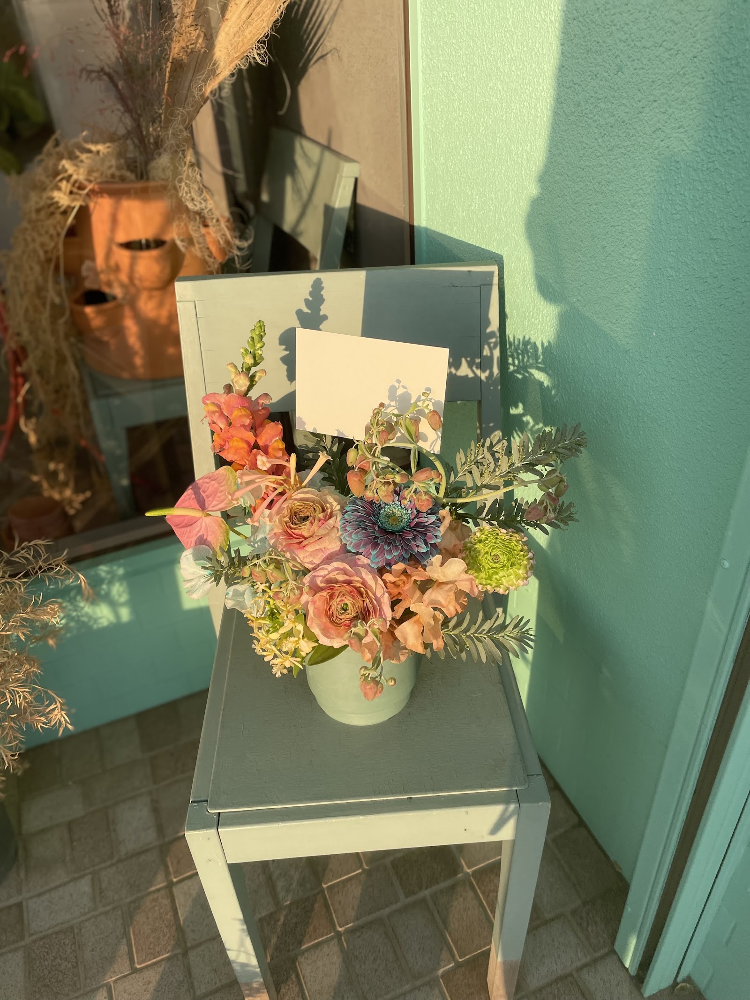
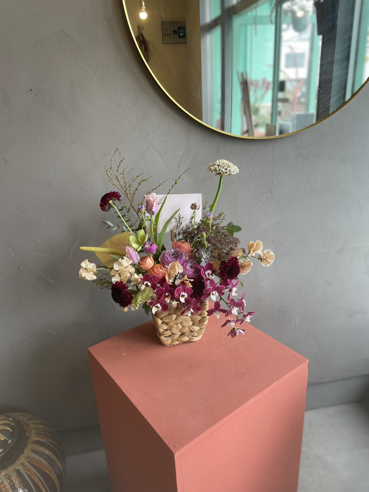

第二章 — 花について
一輪ごとに、選ぶ理由がある
花を選ぶことは、贈る相手やその日の気持ちを思い浮かべることから始まります。GOODIES FLOWERでは、決まった型を当てはめるのではなく、会話を重ねながら、その時々の一点を組み立てています。
三つの姿勢
-
01
季節ごとの出会い
時季によって、あまり見かけない花材や枝ものを店頭に並べています。同じ季節でも、訪れるたびに違う表情に出会えます。
-
02
会話から組み立てる
贈る相手やシーン、その日の気持ちをお伺いしながら、一点ずつ花を組み合わせています。
-
03
幅広いご相談に
お祝いのギフトから、ご自宅用の一輪まで、さまざまなご相談に対応しています。
具体的な対応可否は、内容によりお電話またはInstagramにてご確認ください。

花のある場面
-
01
お祝い・記念日のシーンに
誕生日や記念日など、晴れの日を彩る一束を承ります。
-
02
日常を彩る一輪から
なんでもない日の食卓に、一輪から花を添えていただけます。
-
03
大切な方やペットとのお別れに
お別れの場面でも、贈る方の想いに寄り添った花選びをしています。
クチコミにも、旅立ちの折にご利用いただいたお声が寄せられています。詳しくは第四章「お客様の声」をご覧ください。
-
04
お盆・法要など、季節の行事に
ご自宅用・お墓用など、洋花を用いた仏花のご相談も承っています。

ご相談から、お渡しまで
- お電話またはInstagramでご相談ください
- ご希望の雰囲気やご予算などをお伺いします
- 一点ずつお作りしてお渡しします
※ お渡しまでの日数や当日対応の可否は、ご相談内容により異なります。詳しくはお電話またはInstagramにてご確認ください。
まずはお気軽にご相談ください
ご希望が漠然としたままでも構いません。会話の中から、少しずつ形にしていきます。お電話(070-4729-4349)、またはInstagram(@goodiesflower)からもご相談いただけます。